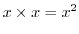

Next: float box arpeggiator Up: Composition 001 Previous: Playing the bass line
[line~] we have used [vline~]
which takes slightly different arguments. The [vline~] generator
takes message arguments of the form (level to go to, time to get
there, delay to wait), so a message like [1 12 0, 0 400 12( will send
the line to one in twelve milliseconds, and then begin moving back to
zero over four hundred milliseconds after a 12 millisecond delay.
This allows for envelopes with a long attack phase to be specified in
a single message. If we sent something like [1 100, 0 20( to
[line~] it would not work. Why? Because the first message of
the pair says go to 1 in 100ms but [line~] immediately
starts moving towards 0 in 20s the instant it receives the second message,
just after receiving the first. [line~] is an unscheduled
segment generator, while [vline~] is scheduled and can have
multiple stages all specified in the same message.
[vline~]
is normalised 0 to 1. If we use [*~] to multiply a signal by
itself we get its square as
. One squared is
one and zero squared is zero, but how does the value change over this range?
It becomes curved, its rate of change becomes proportional to its value, so
it dies away more quickly at the start.
[+~], the signal
version of add here even though the frequency value is a message.
Because the lfo sine wave is symmetrical about zero the average pitch
will still be that given by [mtof].
[clip~ -1 1]
would have no effect on a normalised signal, [clip~ -0.5 0.5]
will chop off half the top and bottom. [clip~ -0.1 0.1]
removes all but the 10 percent closest to 0 creating flattened
top. Multiplying it by a compensation factor brings the clipped wave back up to an audible level. As before
we scale the signal path by the amplitude envelope using [*~]
"square" is used in two ways on this page. When we create a square-wave
we are distorting a wave so that its shape appears square. When we take the square of a signal
we multiply it by itself. These are two different things.
D-synth2.pd
Andy Farnell